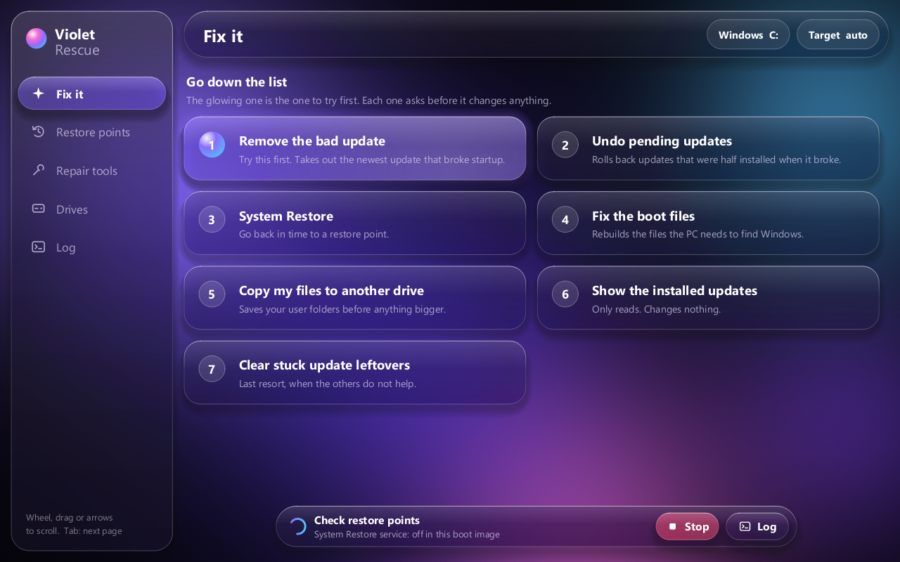
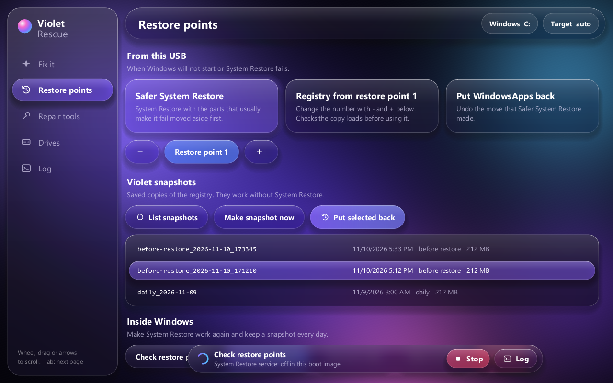
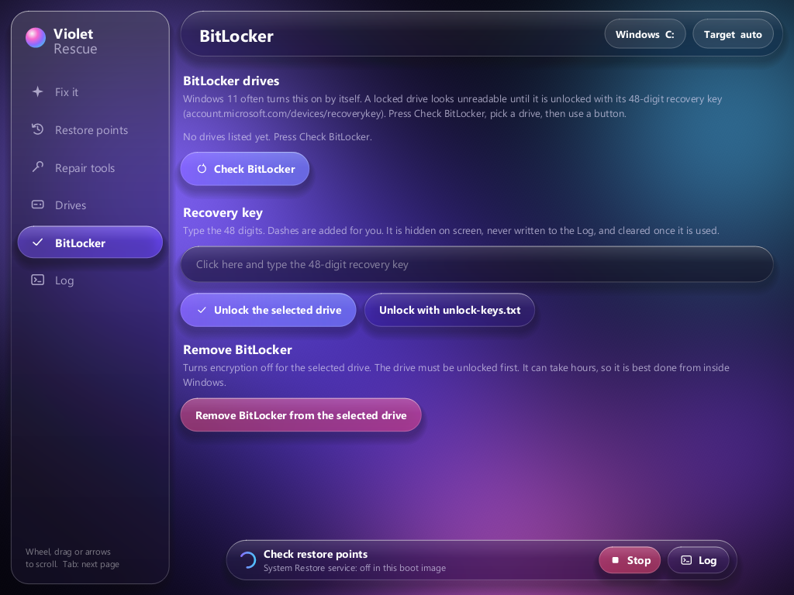
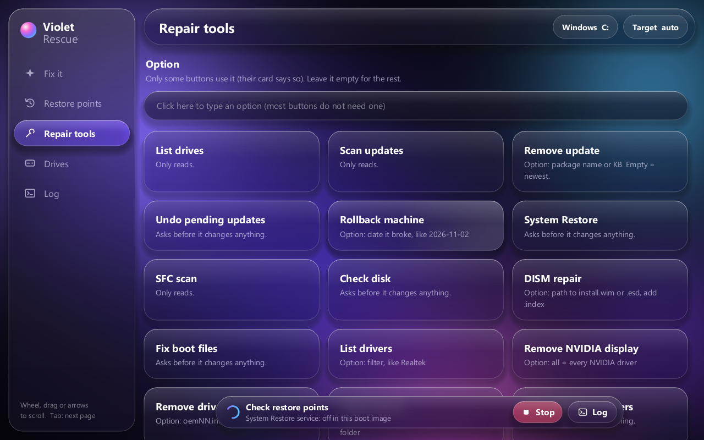
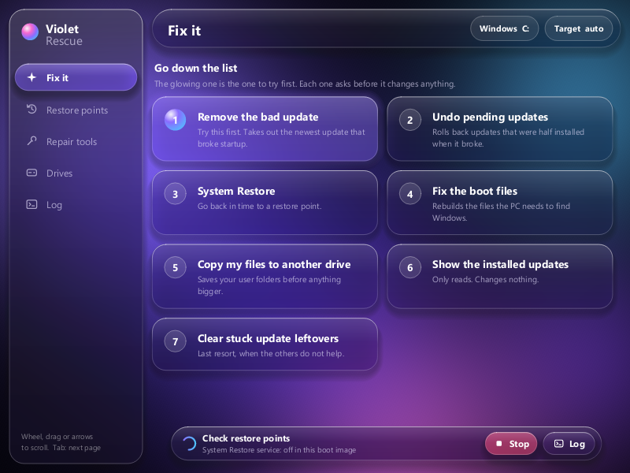

Violet RescueYour PC won't start.
Your PC won't start.
Boot. Repair. Restore.
A repair app that boots from a USB stick and fixes Windows 10 and 11 with big buttons.
The problem
Windows recovery stops at a command prompt
- An update or driver breaks startup: a boot loop or an error code.
- Windows' own recovery offers a few tiles, then a command prompt.
- System Restore often fails with an error of its own.
- A BitLocker-locked drive makes every other fix harder.
How it works
Look first, save your files, then repair
The order the app walks you through. Only the last step changes Windows, and it takes a snapshot before it touches anything.
Fix it
Go down the list
- Remove the bad update
- Undo pending updates
- System Restore
- Fix the boot files
- Copy my files off, first

Restore
Three ways back
- Safer System Restore
- Registry from a restore point, checked before use
- Violet snapshots, no System Restore needed
Every put-back saves the current registry first.

BitLocker
Locked drive? Unlock it, then fix it
- Check which drives BitLocker has locked
- Unlock with the 48-digit key; the key is never printed or logged
- Repair an unreadable NTFS drive from its backup boot sector

Repair tools
Every tool, one tap
SFC, CHKDSK, DISM, drivers, startup items, rollback by date, backups. Each is a card, and each asks before it changes anything.

Built for the recovery screen
No graphics driver needed
- Native Rust, drawn on the CPU
- Glass menu, inertial scrolling, touch and keyboard
- Fits from 800 × 600 up
- Falls back to the classic window if it can't start

Make the stick
Four steps
- On a working Windows 11 PC: install the ADK with
build\get-adk.cmd - Copy the hidden
Winre.wim(reagentc /infoshows where) - Run
build\build-media.cmd Winre.wim E:as administrator. It erases the stick. - Boot the broken PC from it.
Get it
Honest status
- Booted and used on one real broken PC; not tested across many machines yet.
- One repair once made things worse. It now checks its copies before using them.
- Copy your files off before any repair.